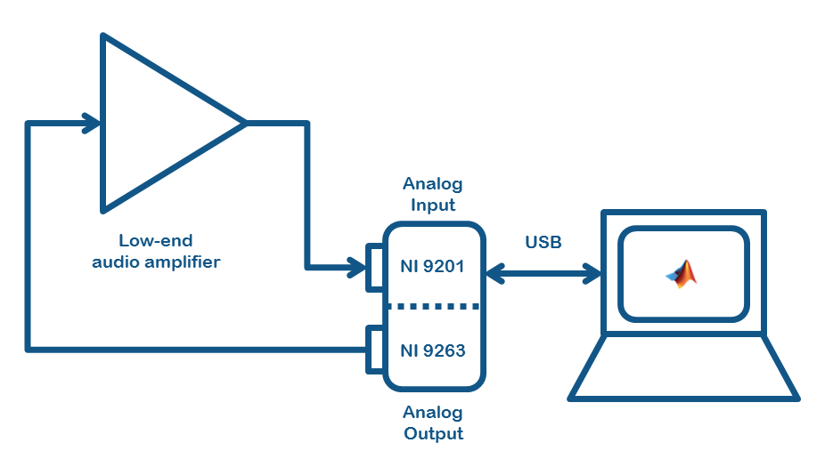
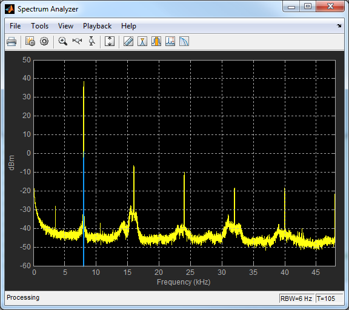
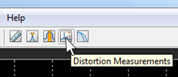

System Objects to Stream Live Data to and from Data Acquisition Interfaces
This examples shows how to exchange live data with Data Acquisition hardware using simple for or while loops and System object™ interfaces.
Contents
Introduction
This example shows how to stream data to and from Data Acquisition interfaces using System objects and simple for or while loops. This is accomplished by using the System object dspdemo.DAQRecorder to acquire live data, and the System object dspdemo.DAQPlayer to generate live data.
These new objects only support live data streaming for the most common cases of AnalogInput and AnalogOutput functionality. For more advanced data acquisition requirements, please refer to the Data Acquisition Toolbox™ documentation.
In the absence of relevant hardware, to preview the type of analysis possible the example can also be be run using pre-recorded data.
Running the example requires DSP System Toolbox™. Using data acquisition hardware also requires Data Acquisition Toolbox.
To run with real hardware, the example assumes the machine it runs on has access to at least one Analog Input channel and one Analog Output channel, through one or more hardware devices supported by the Session-based interface of Data Acquisition Toolbox.
Measurement Setup
The following figure shows the type of hardware setup used to acquire the pre-recorded data used in the example. If a similar setup is available the example can also be run in live mode.
The setup includes
- One AnalogOutput channel. In this example with an NI 9263 board
- One AnalogInput channel. In this example with an NI 9201 board
- A device under test. In this example a low-end audio amplifier
- A standard connection between the devices and the computer running a MATLAB® session. In this case the two boards are mounted on an NI CompactDAQ chassis, which in turn is connected to the computer through USB

Sample objective - SNR measurements on a low-end audio amplifier
The following code can be applied to many types of two-port electrical measurements. In particular, the example shows how to peform a simple Signal-to-Noise Ratio (SNR) measurement on the output of a two-port network, using an 8 KHz sine wave as input. The recorded signal was generated using a low-cost audio amplifier. A sample rate of 96 KHz is used throughout.
To switch between using actual hardware or pre-recorded signals create a logical variable runLive before running the example script. When runLive == false the example runs in recorded mode and no actual Data Acquisition interface is used. When runLive == true the example runs in live mode. In live mode a live test signal is sent to the analog output channel of the chosen Data Acquisition interface, and another signal is acquired through the selected analog input channel. By default the example runs in recorded mode.
% Check if runLive exists as a variable. If not, create it % and set it to false if(~exist('runLive','var')) runLive = false; end
Create all necessary components
First instantiate all components needed, from signal generation and analysis to the interfaces to hardware or the recorded data
% Main time and frequency simulation parameters
fs = 96000; Ts = 1/fs;
f = 8000; T = 1/f;
frameLength = 24000;
Input test signal: sine wave with frequency 8 KHz, sample rate 96 KHz and amplitude 50 mV
In = dsp.SineWave('Amplitude',0.05,'Frequency',f,'SampleRate',fs,... 'SamplesPerFrame',frameLength);
Depending on the value of runLive, data is either acquired live or read back from pre-recorded files.
if runLive
When runLive == true the following code executes. First an instance of dspdemo.DAQPlayer is created to connect MATLAB to an Analog Output channel and generate a live output data stream. To use dspdemo.DAQPlayer after creating an instance
- Call the step method iteratively to pass data to the object
- When the data is finished, call the release method to release the device and stop the data flow.
The behaviour of dspdemo.DAQPlayer can be controlled using the properties
- DeviceName identifies the particular device to be associated with the object. The list of all installed device on the machine in use can be inspected by typing e.g. Gen.DeviceName = ' and then hitting the Tab key. To use this example in 'live' mode, please identify the relevant device description for the particular setup in use and replace it in the code below. If a value for DeviceName is not provided, it defaults to the name of the first available device found on the system.
- SampleRate is the sample frequency to be used by the device
- FirstChannelNumber is the first output channel number used by the device to produce the analog output signal. If the signal provided to the object has only one channel (i.e. the input matrix to the step method has only one column), then FirstChannelNumber is the identifying number of the channel used. If the input matrix passed to the step method has C columns, then the device will generate C signals in parallel over C different channels, from channel number FirstChannelNumber to channel number FirstChannelNumber+C-1. If FirstChannelNumber+C-1 is greater than the number of channels available, then an error is produced. Please note that for a large number of devices the first channel is numbered as 0. The default value of FirstChannelNumber is 0.
- MeasurementType can be either 'Voltage' or 'Current'
- TerminalConfiguration can be set to 'Differential', 'PseudoDifferential', 'SingleEnded' and 'SingleEndedNonReferenced'. The device in use may only support a subset of these options
- OutputDeviceUnderrunStatus when set to true, step returns a logical output that flags whether the internal queue was underrun. When the internal queue is underrun the device does not have enough data samples to feed its output channels and it stops generating signals as a result. The value returned by step can be used to exit an execution loop when an underrun status is detected. The default value of OutputDeviceUnderrunStatus is false. To reinitialize the device use the release method, followed by setup or step.
- TargetLatencyFrames determines the number of samples kept in the device output queue, in units of sample frames. Indirectly, TargetLatencyFrames controls the latency between the time the samples are passed to the object and the time they are actually sent to the device. For shorter latencies but higher risk of hardware underrunning (and automatic device release), choose low values of TargetLatencyFrames. For greater stability, but higher latency, choose higher values of TargetLatencyFrames.
Gen = dspdemo.DAQPlayer(... 'DeviceName', 'cDAQ1Mod2 - National Instruments NI 9263',... 'SampleRate', fs,... 'FirstChannelNumber',0,... 'OutputDeviceUnderrunStatus', true,... 'TargetLatencyFrames', 2) %#ok<UNRCH>
Next create an instance of dspdemo.DAQRecorder to connect MATLAB to an Analog Input channel and acquire a live input data stream. To use dspdemo.DAQRecorder after creating an instance * Call the step method iteratively to get data from the object * When the acquisition si to be terminated, call the release method to release the device and receiving data.
Most properties of dspdemo.DAQRecorder have a similar role to those of dspdemo.DAQPlayer. The differences include the following
- SamplesPerFrame is the number of samples per channels returned by step. The matrix output returned by step has a number of rows equal to SamplesPerFrame
- ChannelNumbers must be a vector of integer values that defines which analog input channels are read from the device. The length of ChannelNumbers determines the number of columns of the output matrix returned by step. Please note that many devices number their channel numbers starting from 0. The default value of ChannelNumbers is 0.
- OutputNumOverrunSamples when set to true, step returns an additional output, reporting the number of samples overrun since the previous call to step. The number is greater than zero when the code using the object does not read out samples using step frequently enough, causing the internal queue to be overwritten by new samples and previously acquired data to be lost. The additional value returned by step can be used to exit an execution loop when samples are overrun. The default value of OutputNumOverrunSamples is false.
Acq = dspdemo.DAQRecorder(... 'DeviceName', 'cDAQ1Mod1 - National Instruments NI 9201',... 'SampleRate', fs,'SamplesPerFrame',frameLength,... 'ChannelNumbers',0,... 'OutputNumOverrunSamples', true)
If runLive is set to false, then a prerecorded version of the audio amplifier output is streamed from a file
else Acq = dsp.AudioFileReader(... 'Filename','HelperDaqStreamExampleOut.wav',... 'PlayCount',inf,'SamplesPerFrame', frameLength); end
The following components are used to analyze the amplifier output
A spectrum analyzer helps inspect the signal in the frequency domain, as well as visualize the result of a number of built-in quantitative analysis, including the SNR
Spect = dsp.SpectrumAnalyzer(... 'FrequencyResolutionMethod', 'WindowLength', ... 'WindowLength', frameLength,... 'FFTLengthSource', 'Property', 'FFTLength', frameLength,... 'SampleRate',fs, 'PlotAsTwoSidedSpectrum', false,... 'SpectralAverages', 64, 'YLimits',[-60,50]);
Stream data using a while loop
The following while cycle executes until endTime worth of test input signal samples are read from the analog input channel through dspdemo.DAQRecorder. If an overrun or underrun is detected a diagnostic message is diplayed in the command window. As the signal is acquired, it is passed to the spectral analyzer and the SNR estimator.
The following code offers two different version of the streaming loop, including a simplified one to use in recorded mode
The live version of the loop follows
if runLive
To avoid spending time initializing the object during the first simulation loop, setup all objects before firt calling step on dspdemo.DAQPlayer or dspdemo.DAQRecorder. This minimizes the chances of underrunning dspdemo.DAQPlayer or overrunning dspdemo.DAQRecorder during the first simulation cycle.
% All objects, whose step methods accept input variables, should be % initialized using a variable of the same size and data type. dummyFrame = zeros(frameLength,1); %#ok<UNRCH> setup(In) setup(Gen, dummyFrame) setup(Acq) setup(Spect, repmat(dummyFrame,1,2)) % Set for how long the live processing should last (in seconds) endTime = 30; deviceOn = true; frameCount = 1; while(frameCount*frameLength/fs <= endTime) && deviceOn frameCount = frameCount+1; % Create test signal inputFrame = step(In); % Generate and acquire [outputFrame, samplesOverrun] = step(Acq); devUnderrun = step(Gen, inputFrame); % Report anything gone wrong if(devUnderrun) fprintf('Output device underrun at time = %g seconds. Device released\n',... frameCount*frameLength/fs) deviceOn = false; end if(samplesOverrun > 0) fprintf('Input device lost %g samples at time = %g seconds\n',... samplesOverrun, frameCount*frameLength/fs) end % Analyze live step(Spect, [outputFrame, inputFrame]); end
else
The following loop uses instead the recorded signal
% Set for how long the live processing should last endTime = 5; startTime = tic; while(toc(startTime) <= endTime) % Generate test signal (only used for comparison in analysis) inputFrame = step(In); % Read a frame of amplifier output signal from file outputFrame = step(Acq); % Live analysis step(Spect, [outputFrame, inputFrame]); end
end
What to do in case of overrun or underrun
To reduce the likelihood of underrunning the queue of dspdemo.DAQPlayer of overruning the queue of dspdemo.DAQRecorder, the following can be tried
- Call setup before the first call to step for all System objects involved in the while loop
- Increase the value of Gen.TargetLatencyFrames
- Increase the value of SamplesPerFrame
- Decrease the value of SampleRate
Estimate SNR - Spectrum Analyzer
dsp.SpectrumAnalyzer can be used to run a number a quantitative signal measurements directly from within the scope. To visualize the SNR first open the Distortion Measurement pane by clicking on the relevant icon on the icon strip as shown in the figure below

The Distortion Measurement pane opens up showing harmonic distortions by defaults. the estimated SNR value is visible among other measurements towards the bottom on the pane. This SNR measurement assumes that the signal is harmonic, i.e. is composed of a high-power fundamental frequency, followed by a number of harmonics at frequencies multiple of the fundamental.

Release all objects
The following releases all software and hardware resources used by the objects during simulation
release(In) release(Acq) if runLive release(Gen) %#ok<UNRCH> end